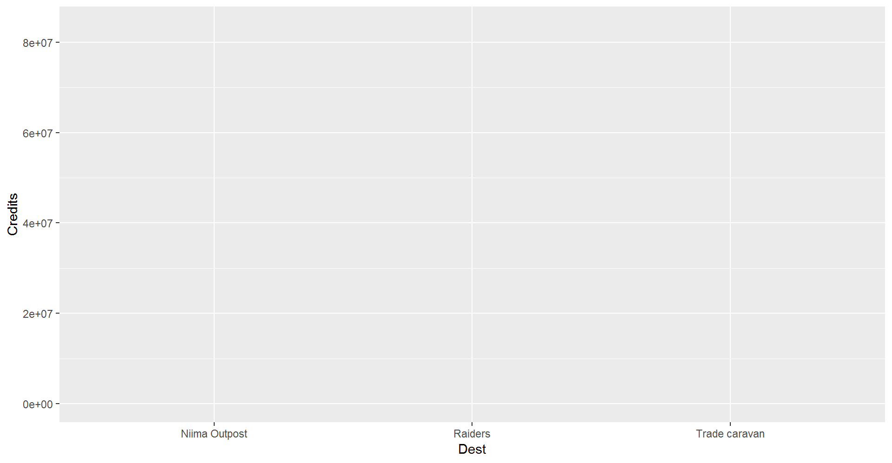
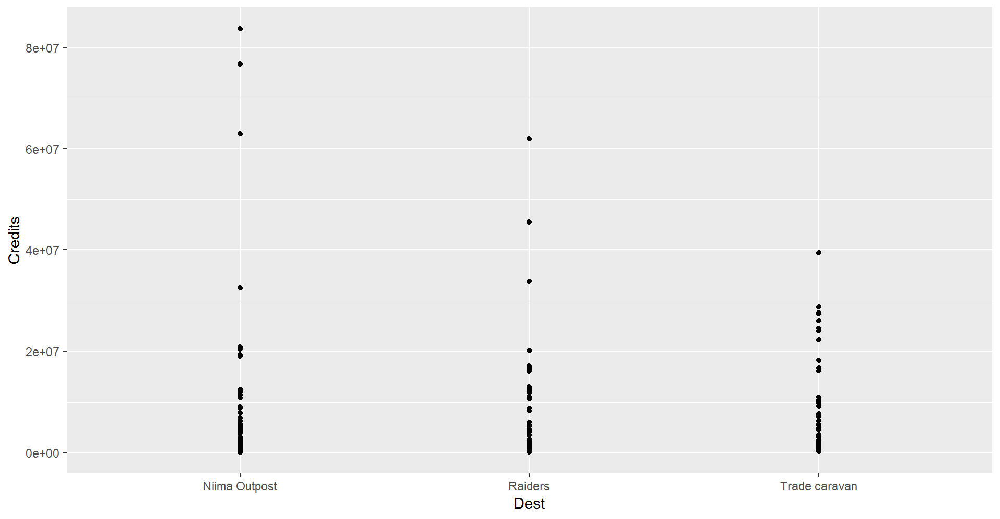
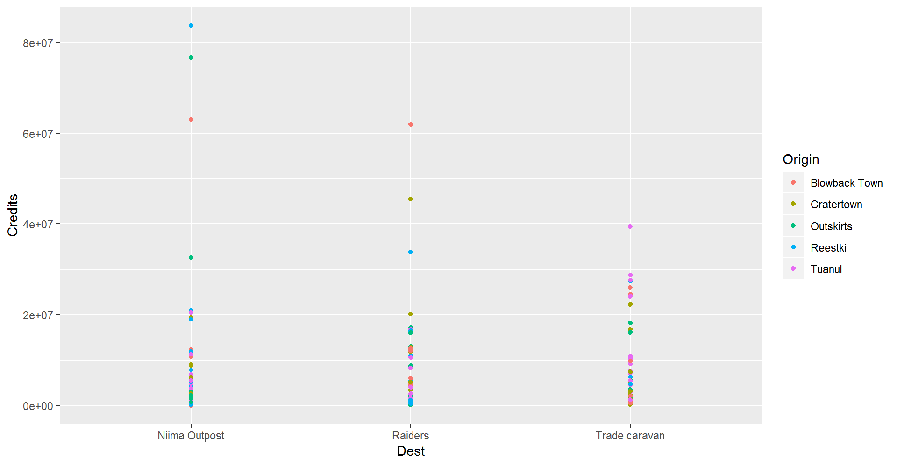
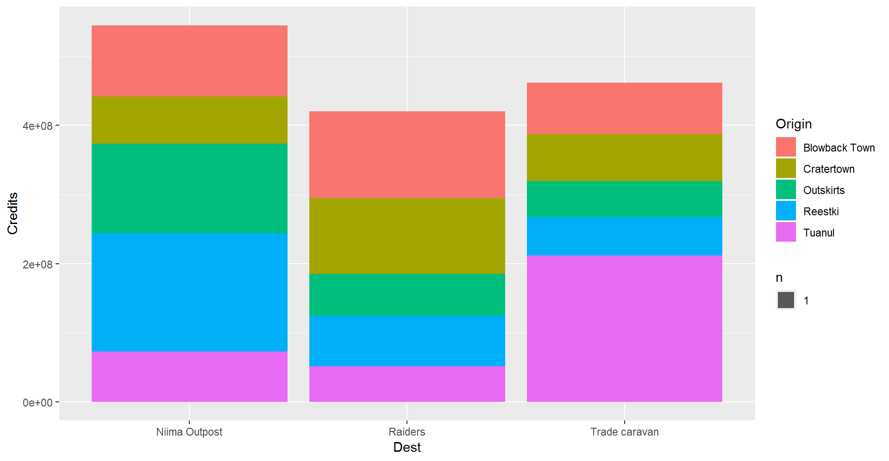

R Training | Day 2
Good morning, young Jedis!

Please connect to your droid
- Open the Start menu (Click the Windows logo on the bottom left of the screen)
- Select
Remote Desktop Connection - Enter
w7-your7digit#orR32-your7digit# - Press Connect
Open your RStudio project
- Open your project folder from last week
- Double click the .Rproj file to open RStudio
- Relax…
Don’t have a project yet?
DOWNLOAD — The Day 1 project files
- Open the
.zipfile - Copy the “junk_data” folder to your Desktop
- Open the folder
- Double click the .Rproj file to open RStudio
Day 2 schedule
- Data transformations
- Add new columns
- Summarize your data
- Split groups and categories in your data
- Save data

- Continue to make plots
- Scatter plots and transparency
- Add a smoothed trend line to the plot
- Add titles, colors, and axis labels
- Bar charts
- Histograms
- Box plots
- Log transform your chart axis
Day 1 review
1. Load your packages
Hint: Put the packages you need at the top of every script.
library("readr")
library("dplyr")
# Your code starts here
#...2. Load data with read_csv()
my_scrap_data <- "data/starwars_scrap_jakku_full.csv"
scrap <- read_csv(my_scrap_data)
scrap <- filter(scrap, Origin != "All")Read a CSV file using base R
There’s often more ways than one to solve a puzzle in R. If one way doesn’t work for you data or is moving slowly, there is likely another way to go about things. You don’t always need a package to read CSVs into R. You can also do this in base R with the function read.csv(), also known as “read dot csv”.
The code below will also read in the Jakku scrap data file from Day 1.
data <- read.csv("data/starwars_scrap_jakku.csv", stringsAsFactors = F)3. select() and arrange() your data
# Sort from low to high
arrange(scrap, Amount)
# Sort from high to low
arrange(scrap, desc(Amount))
##Select just the Origin cities and Destination (receiving) groups
select(scrap, c(Origin, Dest))4. Filter your data with filter()
Hint: Numbers don’t need quotes.
# Filter to Salvage items to only those with Amounts of 299
scrap_299 <- filter(scrap, Amount == 299)
# Filter to Salvage items that went to trade caravans and raiders
scrap_trade <- filter(scrap, Dest %in% c("Trade caravan", "Raiders"))Questions from Day 1
- Finding new packages and functions?
- Use Cheatsheets to find common functions:
- Go to Help > Cheatsheets.
- Data Transformation is what we’re learning now.
- Data Visualization is also good.
- To search for functions
- google.com: include
rorrstats+the question - stackoverflow.com + use the
[r]tag - To search packages in R get the: CRANsearcher
- google.com: include
- Use Cheatsheets to find common functions:
- Where’s my History?
- Push the
UP ARROWin the console to scroll through your recent command history. - To view your entire history, select the
Historytab in the upper right next to theEnvironmenttab.
- Push the
- Get function help inside R:
?arrange()
Data transformation
Let’s calculate some new columns to help prioritize Rey’s scavenging work.
1 | mutate()
mutate()can edit existing columns in a data frame or add new columns calculated from the existing data.
Get to know your data frame
Use these quick functions to describe your data frame.
Data frame info
| Function | Information |
|---|---|
names(scrap) |
column names |
nrow(scrap) |
number of rows |
ncol(scrap) |
number of columns |
summary(scrap) |
summary of all columns |
glimpse(scrap) |
column names + a glimpse of first few values (requires loading dplyr package) |
Add a column
First let’s add a column with our names, so that Rey will thank us personally on Liberation Day.
library(readr)
library(ggplot2)
library(dplyr)
# Get data
scrap <- read_csv("data/starwars_scrap_jakku.csv")
# Clean dta
scrap <- filter(scrap, Origin != "All")
## Add your name as a column
scrap <- mutate(scrap, scrap_finder = "Your name")Change a column

Remember how that unit of Tons was written two ways: “TONS” and “Tons”? We can use mutate() together with tolower() to make sure all of the Salvage scrap is written in lower case. Case matters in R!
scrap <- mutate(scrap, Units = tolower(Units))
# toupper() will change all of the letters in a column to upper case.Add a calculated column
In our work we often use mutate to calculate new units for measurements. In this case, let’s estimate the pounds for scavenge items that are reported in tons.
Tons to pounds conversions
Use filter() to subset the data to the items reported in “tons”, and then use mutate() to convert the Amount column to pounds. We can also change the Units column to “pounds” to avoid any confusion.
scrap_pounds <- filter(scrap, Units == "tons")
scrap_pounds <- mutate(scrap_pounds,
Amount_lbs = Amount * 2000,
Units = "pounds")I have now written scrap_pounds like a million times and I am sick of it. Do I have to type this much? I have rebels to protect and I haven’t eaten in 2 days.
Pro-tip!
Error!
Error in mutate_impl(.data, dots) :If you use
mutate()and provide a single value for a column such as5, every row in the new column will have that value.If you provide a vector of values, such as
lbs = Amount * 2000, then a unique value will be calculated for each row.An
Errorwill occur if you provide a vector that is longer than 1, but has a different length than the number of rows in your data frame. The error message is a helpful reminder that you must provide a vector that is either a single value or the same length as your data frame.
2 | The pipe %>%
Use the %>% young Padawan.

Luckily, you don’t have to do ALL that typing. The pipe let’s you can chain the filter() and arrange() functions together and do everything in one go.
my_scrap <- scrap %>%
filter(Salvage == "Acceleration compensator") %>%
arrange(desc(Amount))3 | left_join()
Remember our different units issue?
Well, we don’t want to convert the units one by one. Luckily for us, BB8 found a unit converter table while surfing the web. How does BB8 keep doing that!?
Get data directly from the interwebs
# The data's url
convert_url <- "https://raw.githubusercontent.com/MPCA-air/RTrain/master/data/conversion_table.csv"
# Read in the conversion data
convert <- read_csv(convert_url)
head(convert, 3)## # A tibble: 3 x 3
## item units pounds
## <chr> <chr> <dbl>
## 1 Acceleration compensator Items 1.5
## 2 Activation cylinder Items 25
## 3 Antishock field Items 153Join 2 tables
left_join(table1, table2, by = c("columns to join by"))

# Join the scrap to the conversion table
scrap <- left_join(scrap, convert, by = c("Salvage" = "item"))
head(scrap, 5)## # A tibble: 5 x 9
## Salvage Origin Dest Amount Units Price_per_Ton scrap_finder units pounds
## <chr> <chr> <ch> <int> <chr> <dbl> <chr> <chr> <dbl>
## 1 Flight~ Outsk~ Nii~ 887 tons 591. Your name Tons NA
## 2 Proxim~ Outsk~ Rai~ 7081 tons 1229. Your name Tons NA
## 3 Vitus-~ Reest~ Rai~ 4901 tons 226. Your name Tons NA
## 4 Aural ~ Tuanul Rai~ 707 tons 145. Your name Tons NA
## 5 Electr~ Tuanul Nii~ 107 tons 188. Your name Tons NAHelp! Remeber to type ?left_join if you are wondering what the arguments are.
4 | ifelse()
Sometimes you may want the value of a new column to depend on the value of an existing column, in other words you want to mutate() conditionally. We use ifelse() to do this.
ifelse(If this is true, "Do this", "Otherwise do this thing")
# Convert the Amount to pounds, but only if the units are not already in tons
scrap <- scrap %>%
mutate(Ton_Conv = ifelse(Units == 'tons', Amount,
Amount * pounds / 2000))Congratulations of galactic proportions to you. We have a clean and tidy data set. If BB8 receives new data to append, we can re-run this script and in 5 seconds we will have a cleaned up data set again!
Exercise
Total price
We now have the amount of tons sold and the price per ton, but we want to know the total amount of credits for each transaction. How would we calculate that?
# Calculate the total credits for each transaction
scrap <- scrap %>%
mutate(_______ = _______________)Show hint
Total price
We now have the amount of tons sold and the price per ton, but we want to know the total amount of credits for each transaction. How would we calculate that?
# Calculate the total credits for each transaction
scrap <- scrap %>%
mutate(Credits = _______ * _______)Show code
Total price
We now have the amount of tons sold and the price per ton, but we want to know the total amount of credits for each transaction. How would we calculate that?
# Calculate the total credits for each transaction
scrap <- scrap %>%
mutate(Credits = Ton_Conv * Price_per_Ton)We as data analysts often get questions like, What’s the highest number? What’s the lowest number? What is the mean tonnage from Cratertown? So, let us move on to summarize().
5 | summarize() this

summarize() allows you to apply a summary function like median() to a column and collapse your data down to a single row. To really dig into summarize you’ll want to know some common summary functions, such as sum(), mean(), median(), min(), and max().
sum()
Use summarize() and sum() to find the total credits from all Salvage.
summarize(scrap, Total_Credits = sum(Credits))## # A tibble: 1 x 1
## Total_Credits
## <dbl>
## 1 1426971611.mean()
Use summarize() and mean() to calculate the mean weight in tons in the Salvage reports.
summarize(scrap, mean_weight = mean(Ton_Conv, na.rm = T))## # A tibble: 1 x 1
## mean_weight
## <dbl>
## 1 5390.Note the
na.rm = TRUEin themean()function. This tells R to ignore empty cells or missing values that show up in R asNA. If you leavena.rmout, the mean funciton will return ‘NA’ when it finds a missing value in the data.
median()
Use summarize to calculate the median weight in the Salvage reports.
summarize(scrap, median_price = median(Ton_Conv, na.rm = T))
max()
Use summarize to calculate the maximum price per ton any scrapper got for their Salvage.
summarize(scrap, max_price = max(Price_per_Ton, na.rm = T))
min()
Use summarize to calculate the minimum price per ton any scrapper got for their Salvage.
summarize(scrap, min_price = min(Price_per_Ton, na.rm = T))
nth()
Use summarize() and nth(Origin, 12) to find the name of the Origin City that got the 12th highest scrapper haul.
Hint: Use arrange() first.
arrange(scrap, desc(Ton_Conv)) %>% summarize(price_12 = nth(Origin, 12))
sd()
What is the standard deviation of the credits?
summarize(scrap, stdev_Credits = sd(Credits))
quantile()
Quantiles are useful for finding the upper or lower range of a column. Use the quantile() function to find the the 5th and 95th quantile of the prices.
summarize(scrap,
price_5th_pctile = quantile(Price_per_Ton, 0.05, na.rm = T),
price_95th_pctile = quantile(Price_per_Ton, 0.95))Hint: add na.rm = T to quantile().
n()
n() stands for count.
Use summarize and n() to count the number of reported Salvage records going to a Niima outpost.
Hint: Use filter() first.
filter(scrap, Dest == "Niima Outpost") %>% summarize(salvage_records = n())## # A tibble: 1 x 1
## salvage_records
## <int>
## 1 78Exercise
Create a summary of the scrap data that includes 3 of the summary functions above.
summary <- summarize(scrap,
max_credits = __________,
weight_90th_pct = quantile(Weight, 0.90),
count_records = __________,6 | group_by()
Wouldn’t it be nice if we could easily find the mean price at every Origin City? It’s time for
group_by()!
Let’s use group_by with the column Origin again, but this time use summarize to find the mean(Price_per_Ton) for each Origin City.
scrap_summary <- group_by(scrap, Origin) %>%
summarize(mean_price = mean(Price_per_Ton, na.rm = T)) Rounding digits
You can round the prices to a certain number of digits using the round() function. We can finish by adding the arrange() function to sort the table by our new column.
scrap_means <- group_by(scrap, Origin) %>%
summarize(mean_price = mean(Price_per_Ton, na.rm = T),
mean_price_round = round(mean_price, digits = 2)) %>%
arrange(mean_price_round) %>%
ungroup()NOTE: The round() function in R does not automatically round values ending in 5 up, instead it uses scientific rounding. It rounds values ending in 5 to the nearest even number, so 2.5 rounded to the nearest whole number using round() is 2, and 3.5 rounded to the nearest whole number is 4. If you want to round all values ending in 5 up, then you’ll have to use a rounding function from another package.
Try using group_by with the column Origin and then use summarize to count the number of Salvage reports from each city.
scrap_counts <- group_by(scrap, Origin) %>%
summarize(origin_count = n()) %>%
ungroup()Pro-tip!
Ending with
ungroup()is good practice. This will prevent your data from staying grouped after the summarizing has been completed.
7 | Save files
Let’s save the mean price summary table we created to a CSV. That way we can print it to have it transmitted through Droid courier to Rey. To save a data frame we’ll use the write_csv() function from our favorite readr package.
# Write the file to your results folder
write_csv(scrap_means, "results/Mean_prices_by_origin.csv")Pro-tip!
Warning! By default, R will overwrite a file if the file already exists in a folder. It will not ask for confirmation. To be safe, do not save processed data to your
data\folder.
8 | Grouped mutate()
We can bring back mutate to add a column based on the grouped values in a data set. For example, you may want to add a column showing the mean price by country to the whole table.
When you combine group_by and mutate the new column will be calculated based on the values within each group.
group_by(scrap, Origin) %>% mutate(origin_mean_price = mean(Price_per_Ton, na.rm = T)) %>% ungroup()Let’s visualize the data with some more plots.
9 | ggplot() sandwich

The 3 ingredients in a ggplot
1. The base plot
ggplot(scrap)Note when we load the package it’s
library ("ggplot2"), but the function to make a plot isggplot(scrap). We admit, it is a bit silly.
2. The the X, Y aesthetics
The aesthetics assign the components from the data that you want to use in the chart. These also determine the dimensions of the plot.
ggplot(scrap, aes(x = Dest, y = Credits)) 
3. The layers or geometries
ggplot(scrap, aes(x = Dest, y = Credits)) + geom_point()
Exercise
Try making a scatterplot of any two columns.
Hint: Numeric variables will be more informative.
ggplot(scrap, aes(x = __column1__, y = __column2__)) + geom_point()Colors
Now let’s use color to show the origins of the scrap
ggplot(scrap, aes(x = Dest, y = Credits, color = Origin)) +
geom_point()
This is a too much detail. Let’s make a bar chart and add up the sales to make it easier to understand.
ggplot(scrap, aes(x = Dest, y = Credits, fill = Origin)) + geom_bar(stat = "sum")
This is the same as geom_col().
ggplot(scrap, aes(x = Dest, y = Credits, fill = Origin)) + geom_col()What if we want to make it easier to compare sales by origin? Let’s change the position.
ggplot(scrap, aes(x = Dest, y = Credits, fill = Origin)) +
geom_bar(stat = "sum", position = "dodge")Homeworld training

- Load one of the data sets below into R
- Porg contamination on Ahch-To: https://raw.githubusercontent.com/MPCA-air/RTrain/master/data/Porg_samples.csv
- Planet Endor air samples: https://raw.githubusercontent.com/MPCA-air/RTrain/master/data/air_endor.csv
- Or use data from a recent project of yours
- Create 2 plots using the data. Don’t worry if it looks really weird. Consider it art.
- Paste the function
runif(1)into your console.- If the number is bigger than
0.2e-mail your plots to the class.
- If the number is bigger than